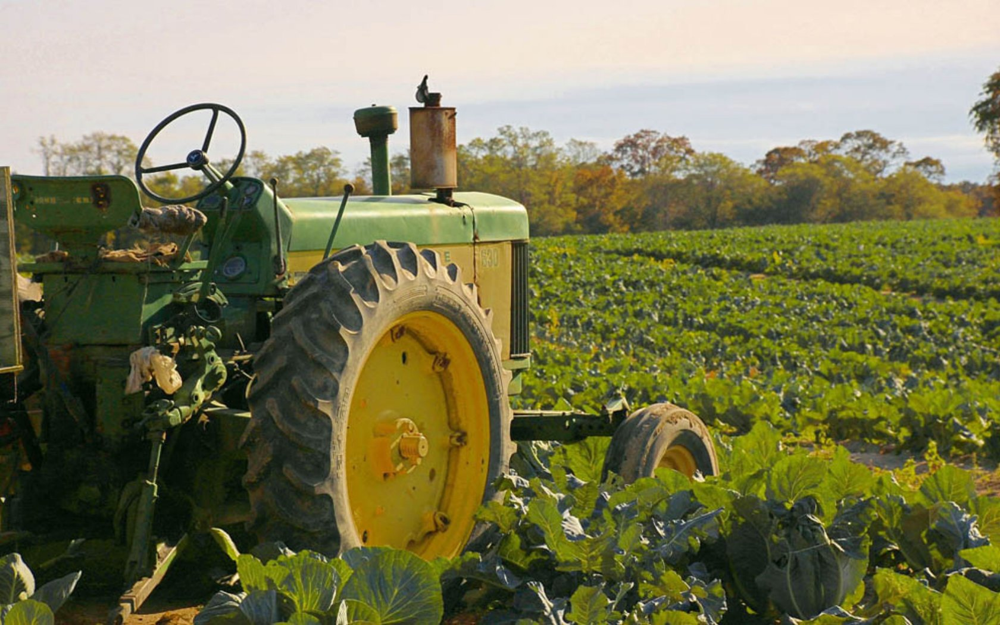

Smart Irrigation is you need for this Christmas
Get to know us betterHello Baby can you come over This is what i have been doing the whole day
This is a heading
Smart Irrigation is a new sophisticated way to save both water and energy during irrigation. We have a optimized algorithnm created by her exellence Christine Tomato and endorsed by her vice exellence Anush.